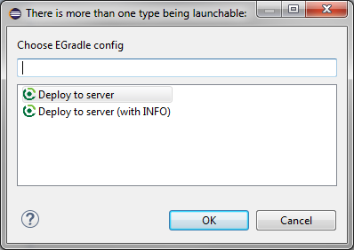

User guide
User guide
When your gradle execution failed (e.g. you executed "unknown-task" ) the build failed dialog will apear:
If your build script has compile or evaluation failures and output validation is enabled, another dialog will appear and errors are shown.
If there are more than one existing launch configuration for the project, the configuration can be chosen.

When you have already a configuration created you can simple do a right click to the project and use "Run as ... EGradle" and the launch starts. If you have multiple launch configurations done for this project, a selection dialog will appear:

Your are able to configure
You could this do also with raw settings, but it's more comfortable and you are able to use eclipse variables:


The console output is shown as usual but special keywords are syntax highlighted:

When you just want to execute some simple tasks which need no special
configurations you can press
CTRL+SHIFT+ALT+END
and a small dialog appears where you can type your wanted tasks and
press
ENTER
to execute. The dialog contains a history about your last (max 20)
entered commands and you can select previous commands by cursor keys
or select by combobox list. The last entered command is always
automatically selected when dialog appears. The history is not
persisted and always cleared when you restart your eclipse.
You got no possibility to setup parameters, system
properties or environment entries, but your able to execute some
standard calls - e.g. "tasks" or "--version". (Remark: Before
EGradle 2.0
was used as shortcut, but was replaced in 2.0 because of handling
problems with US keyboard layout)
CTRL+SHIFT+#
Instead of using the keyboard shortcut you can also press the corresponding toolbar button to open the dialog:
The output is done in EGradle System Console, which will automatically
show up when
ENTER
key was pressed and execution starts